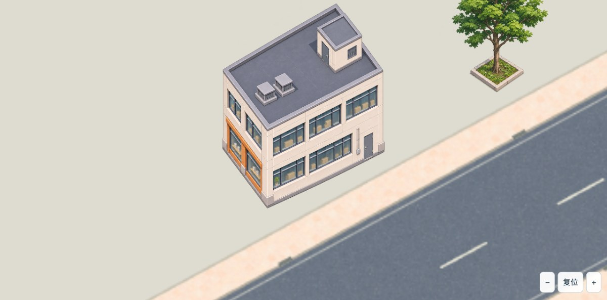

只看这一栋：房子底边是否顺着原路
原生修订候选 · 未用户验收 · 不是全县地图
切换两张真实 Cocos 运行截图，看建筑长边与道路是否接近同一方向、墙体是否保持竖直。树木与路灯素材保留，不在这轮重画。

改后：建筑长边已更接近该街段，仍有角度残差与透明杂边，未标记 ready。
两图使用同一原路、镜头和展示锚点；新旧图的绘制体量/地基尺寸并不完全一致，所以本页比较的是方向，不是等体积或完整四向一致性。当前只做单楼验证，未扩其余建筑。
当前内部核对结果与边界
- 实际源街段投影：长边目标约 −28.49°，短边目标约 +55.41°。不是直接套用世界轴 ±41.6°。
- 新图不透明轮廓局部直线拟合约 −25.76° / +53.08°，仍有约 2～3°残差。轮廓含基座和边缘像素，不是精密相机标定，不能据此宣称配准通过。
- 新图实际原生尺寸 1254×1254，RGBA；未放大伪造高清、未旋转/拉斜/镜像或修像素。外圈仍有少量白彩边与稀疏杂点。
- 原路、源投影、用户 Tiled、旧版本以及已认可树灯原字节保持。此页是独立展示摆位，不向用户手调地图反写。
- 旧25图没有接入；没有运行游戏阶段测试、操作存档或宣称首页98%一致。